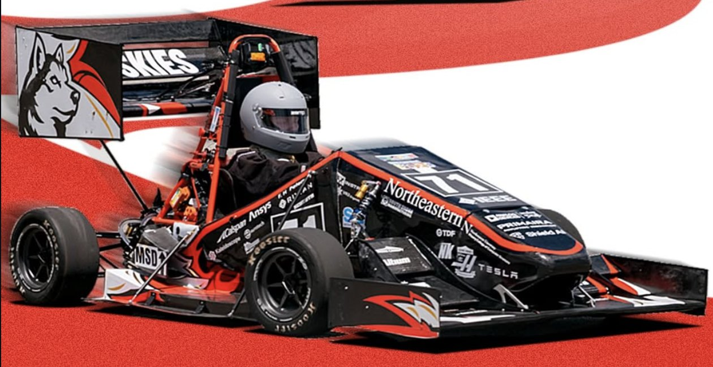
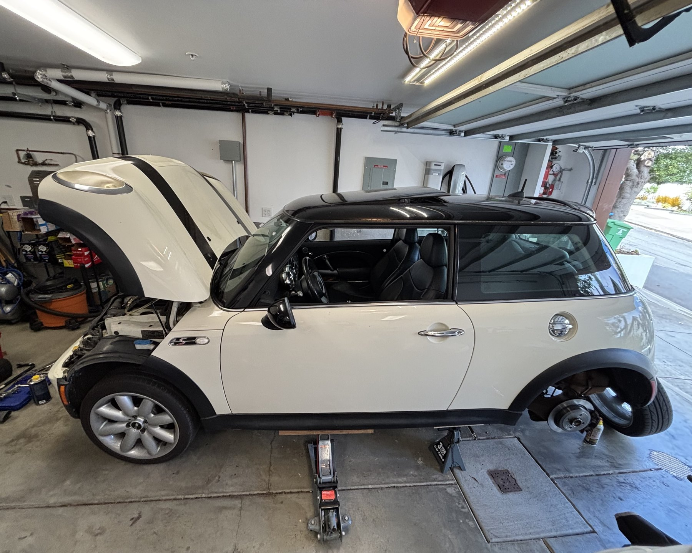
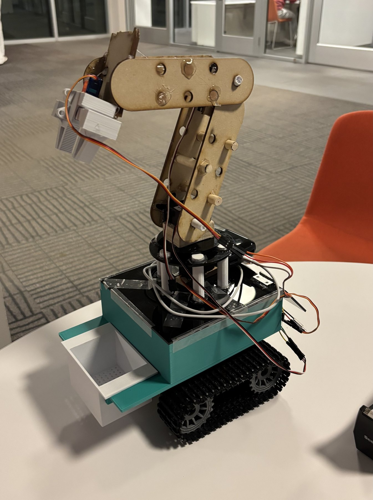
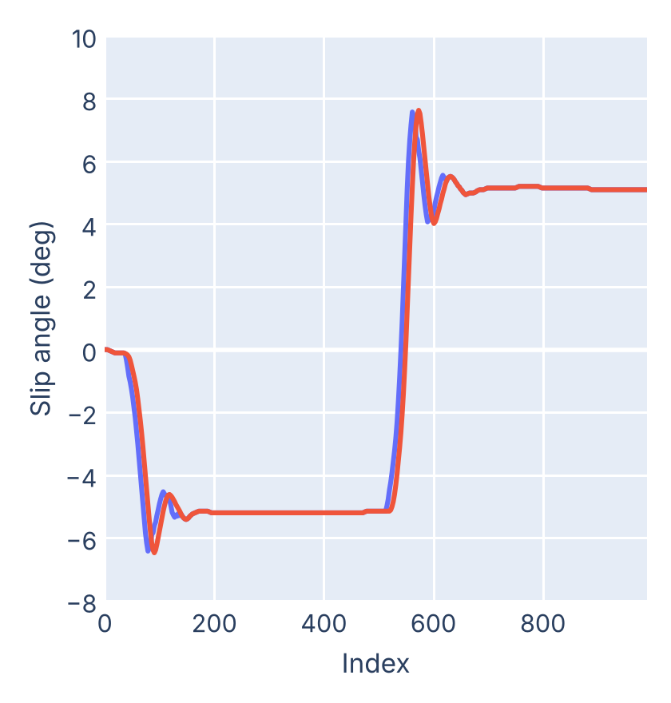
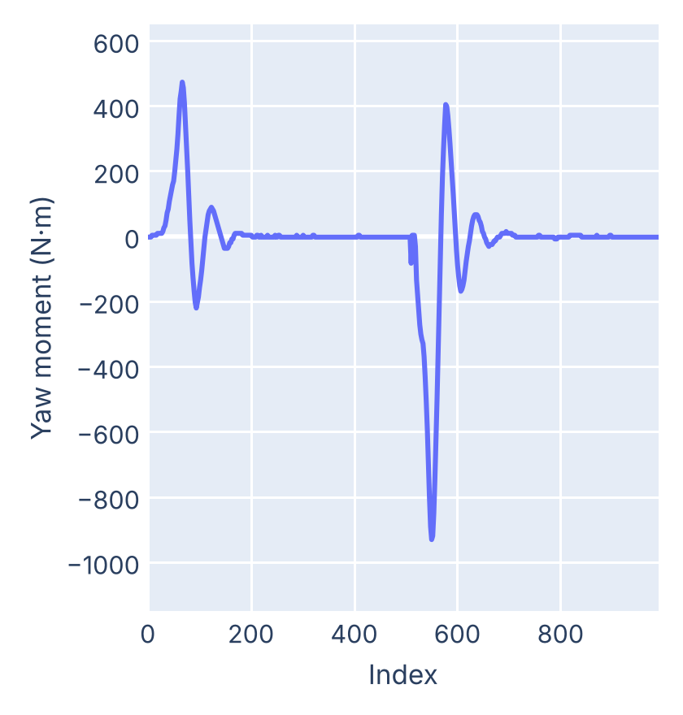
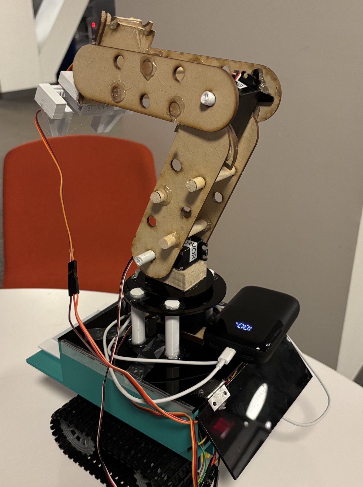
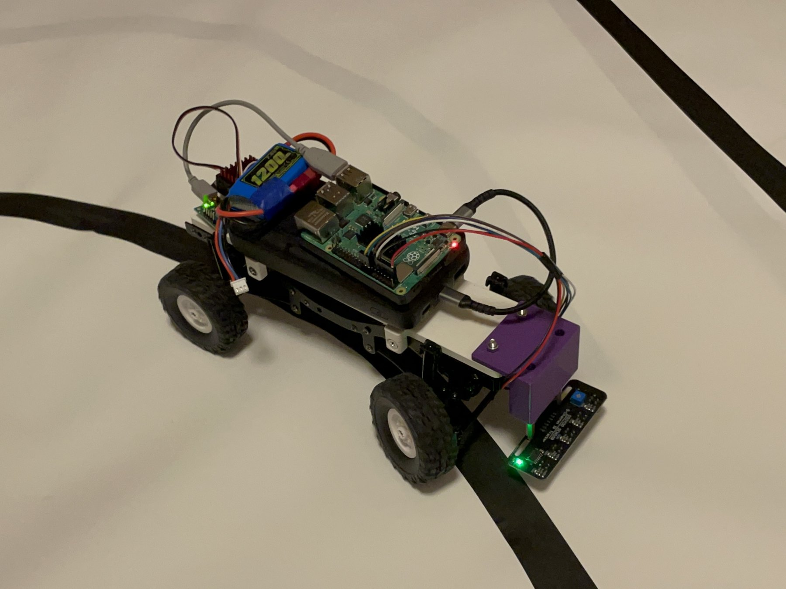

The place in the engineering world that fascinates me the most is the intersection of mechanical hardware, software, and physics theory. I love seeing the tangible application of my code and building the mechanical system that it interacts with. This portfolio collects the projects I am most proud of, from vehicle dynamics simulation on a Formula SAE electric race car, to rebuilding the suspension on my own car, to robots I have designed, built, and programmed.
Download PDF versionMy most recent project for the club was building a bicycle model in Python for the team's simulation software. A bicycle model lumps the two front tires and the two rear tires together, so the car is described by just a front axle, a rear axle, and the mass between them. I built it to follow the car's real specifications. This allowed us to measure the cause and effect of various parameters without the added complexity of nonlinear tire models and load transfer.
The model let us vary parameters such as weight distribution, wheelbase, and cornering stiffness and see the effect on acceleration, lap time, yaw, and slip angles. For example, whether the car understeers or oversteers depends on only a couple of factors, including front/rear mass distribution and cornering stiffness, which makes it much easier to find which input values create the desired output.
This gave us a better understanding not only of how, but why the car performs the way it does, and it sped up the design process by letting us compare options before committing to physical changes.
These are plots from my bicycle model. Being able to see slip angles and yaw moment respond as I changed one input at a time is what made the model so effective for comparing design options.


Another project that I am very proud of is the work I have done on my twenty-year-old manual Mini Cooper S. This past summer I rebuilt the entire suspension and did a full brake job, which included pulling the leaking CV drive axles out of the transmission.
During the test drive, after I thought I had successfully replaced both axles, the left axle popped out of the transmission and the car refused to go into gear. Being in San Francisco, I made the quick decision to pull into a turnout with the momentum I had left, so I could bring the car safely to a stop. I then put the car in neutral and rolled it back down the hill to a small side street near my house, where I worked on the axle and fixed it properly.
For my project-based engineering course, our team built a robot on treads with a robotic arm and a detachable bucket, made to pick up trash on the beach and separate the collected debris from the sand.
The arm is made of laser cut links that rotate on a turntable base, with a servo at each joint and a claw at the end. The bucket slides out of the side of the body so the collected trash can be emptied once it is separated from the sand.
I liked this project because it incorporated multiple aspects of engineering: designing parts on the computer, making them with my hands, and then writing the code that makes them move. A lot of things do not fit or work the first time, and working through that with my team was the best part.


I converted an RC car into an autonomous vehicle. I wired IR sensors to a Raspberry Pi and wrote the Python code that turned the sensor readings into steering and throttle commands, so the car could follow a black line on its own.
I also included a recovery routine for curves tighter than the car's turning radius. When the car loses the line in a sharp curve, it backs up and takes another angle at it, which let it get around turns it physically could not make in one pass.
I have a sustained work ethic and attention to detail and I love to learn new things. I am highly collaborative and an optimist, and these things carry me through the point where something feels like it will never work, to the point where I am able to solve the problem. In all of my projects, I document procedures and results with precision and write clear reports, which have been appreciated by my team members.
SolidWorks, AutoCAD, Git, Vim, VSCode, LaTeX, Excel, Adobe Illustrator, Lightroom/Photoshop
Manual milling, 3D printing, laser cutting, soldering, oscilloscope, digital multimeter
Python, Java, C++, MATLAB, Bash
Calculus I–III, Differential Equations, Linear Algebra, Mechanics, Statics, Material Science, Electricity & Magnetism